Aujourd’hui — comparaisons Données entièrement fictives. La colonne Avant montre l’écran principal antérieur ; les cartes annotées de la maquette décrivent les autres rendus. Les annotations ne sont jamais affichées dans l’application.
Ordinateur 1360 px — Semaine avec engagements Avant — écran principal Après — état vérifié 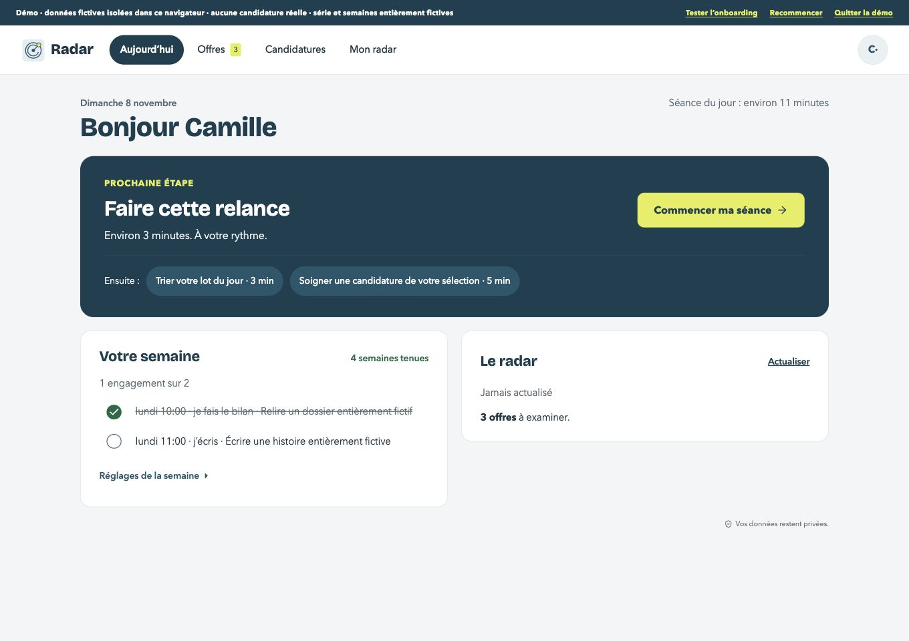
Maquette — annotations hors interface Ordinateur 1360 px — Journée terminée Avant — écran principal Après — état vérifié 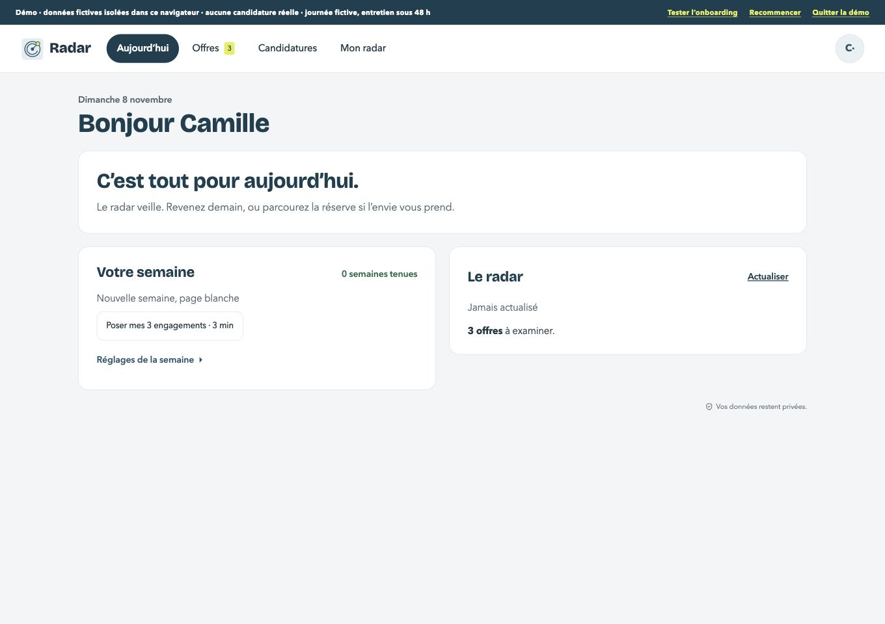
Maquette — annotations hors interface Ordinateur 1360 px — Entretien sous 48 heures Avant — écran principal Après — état vérifié Maquette — annotations hors interface Ordinateur 1360 px — Compte neuf Avant — écran principal Après — état vérifié 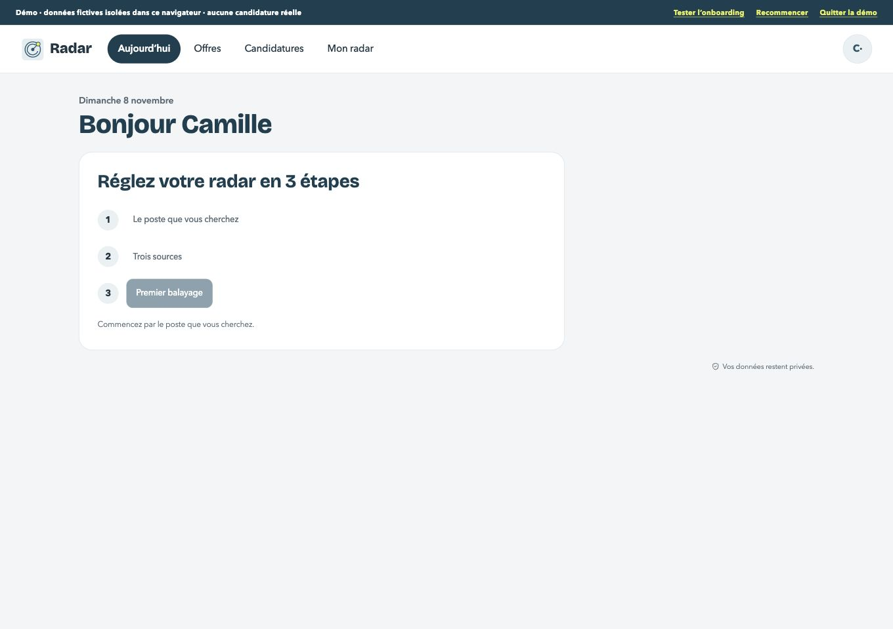
Maquette — annotations hors interface Ordinateur 1360 px — Semaine sans plan Avant — écran principal Après — état vérifié 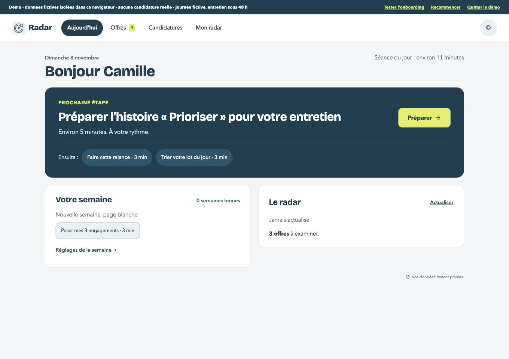
Maquette — annotations hors interface Ordinateur 1360 px — Chargement Avant — écran principal Après — état vérifié 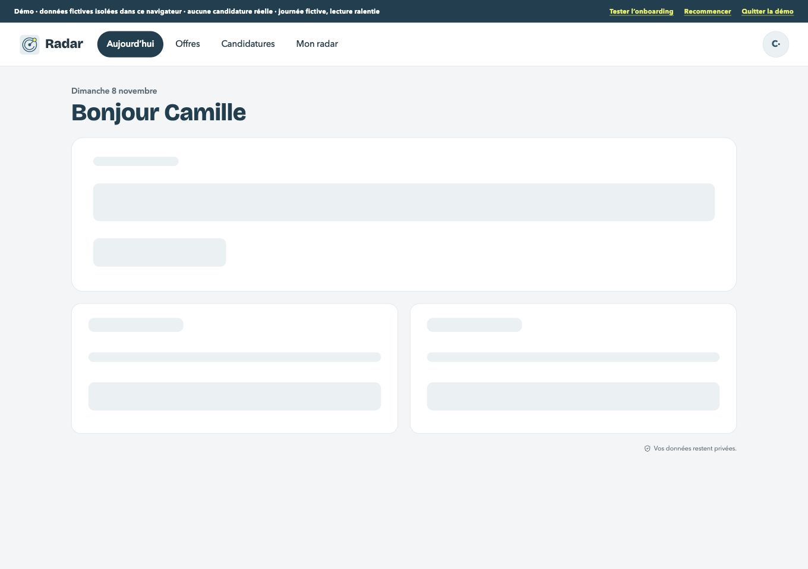
Maquette — annotations hors interface Ordinateur 1360 px — Erreur et reprise Avant — écran principal Après — état vérifié 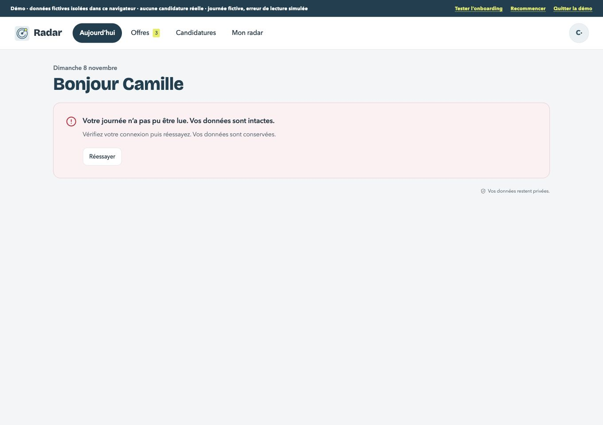
Maquette — annotations hors interface Ordinateur 1360 px — Panne partielle Avant — écran principal Après — état vérifié 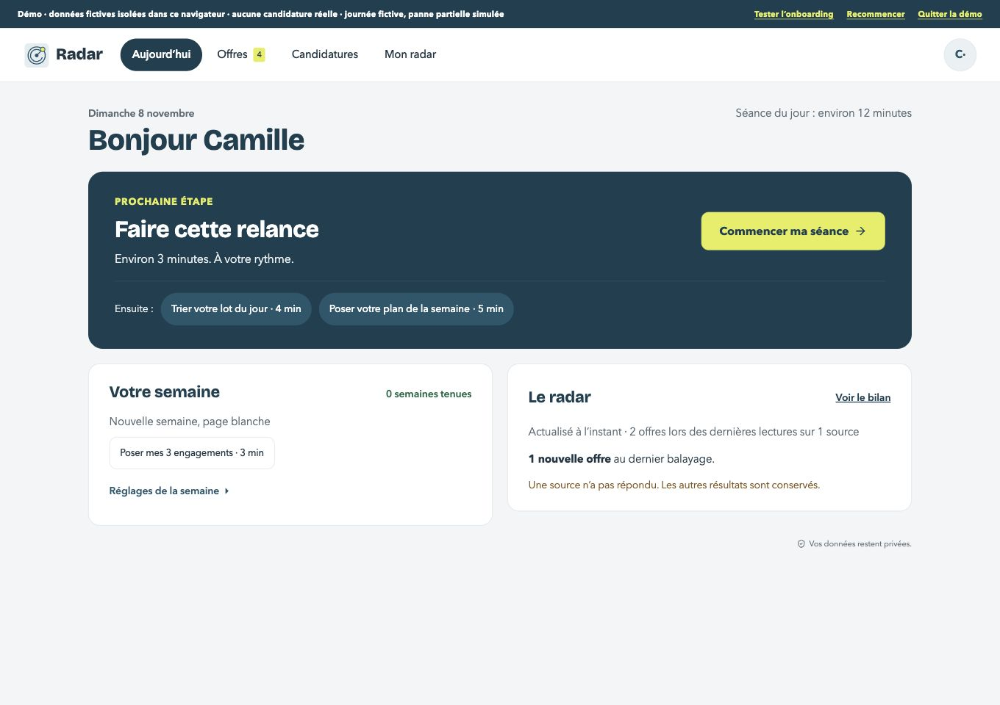
Maquette — annotations hors interface Mobile 390 px — Accueil avec le jeu principal Avant — écran principal 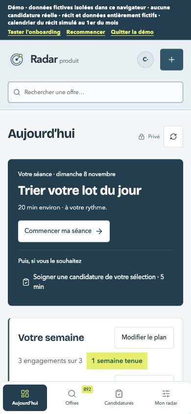
Après — état vérifié 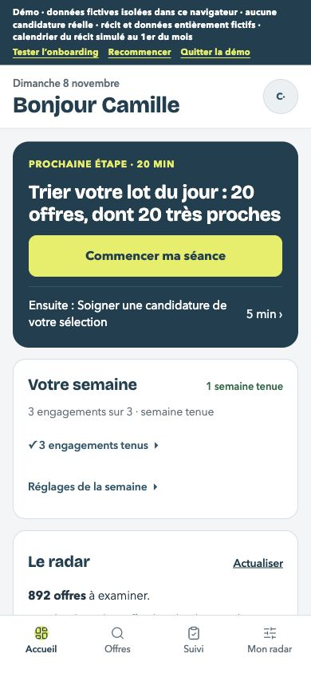
Maquette — annotations hors interface Mobile 390 px — Semaine avec engagements Avant — écran principal Après — état vérifié 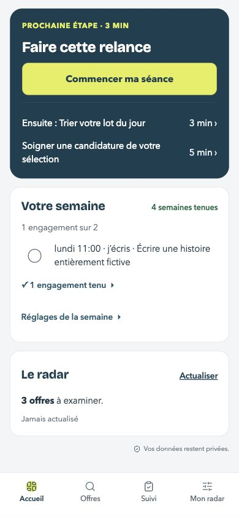
Maquette — annotations hors interface Mobile 390 px — Journée terminée Avant — écran principal Après — état vérifié 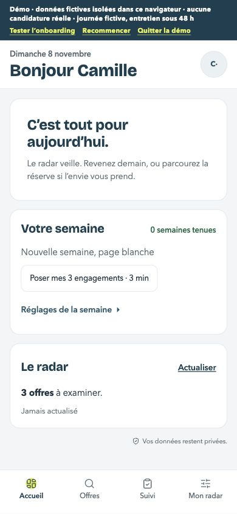
Maquette — annotations hors interface Mobile 390 px — Entretien sous 48 heures Avant — écran principal Après — état vérifié 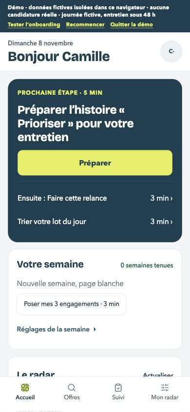
Maquette — annotations hors interface Mobile 390 px — Compte neuf Avant — écran principal Après — état vérifié 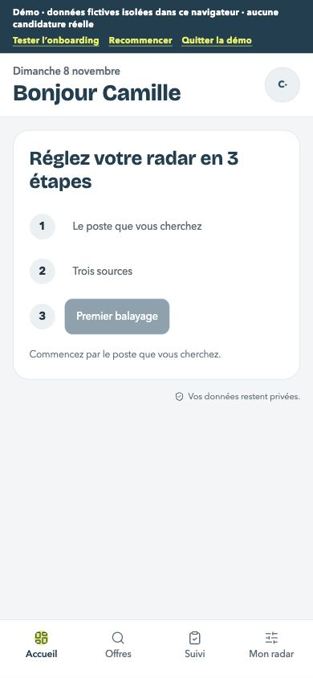
Maquette — annotations hors interface Mobile 390 px — Semaine sans plan Avant — écran principal Après — état vérifié Maquette — annotations hors interface Mobile 390 px — Chargement Avant — écran principal Après — état vérifié 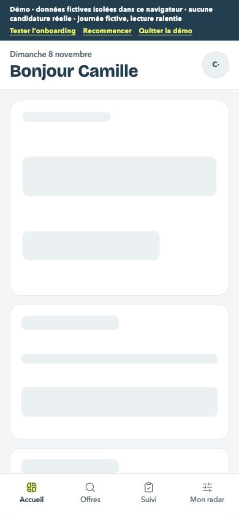
Maquette — annotations hors interface Mobile 390 px — Erreur et reprise Avant — écran principal Après — état vérifié 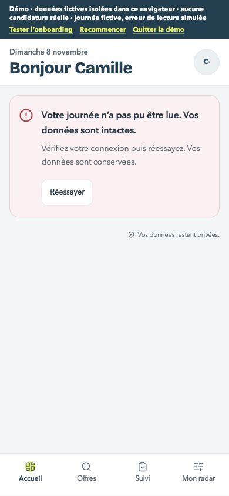
Maquette — annotations hors interface Mobile 390 px — Panne partielle Avant — écran principal Après — état vérifié 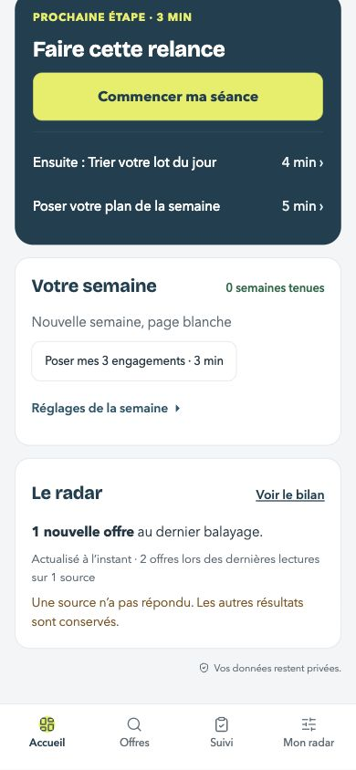
Maquette — annotations hors interface